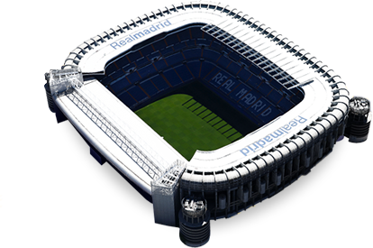

Santiago Bernabeu
Address
Avenida Concha Espina
s/n 28036 Madrid

Capacity of Santiago Bernabeu
The stadium can hold 80,400 individuals right now.
Story of Santiago Bernabeu
Santiago Bernabeu is the home of Real Madrid and is unquestionably one of the world's most celebrated soccer venues.
The stadium was initiated in December 1947 with a match between Real Madrid and the Portuguese club Os Belenseses. At the point when initially extended in 1954, it turned into the biggest stadium on the planet around then, with a limit of 120,000. There have been a few remodels from that point forward, and current limit is 80,400.
Initially called Estadio Chamartin after Madrid's past stadium, the name was changed on January 4, 1955 to pay tribute to the club's leader, Santiago Bernabeu, whose vision and authority ordered this grand venture.
The stadium is situated in the heart of the business locale and even has its own Madrid Metro station along the 10 line, called "Santiago Bernabeu".
There are every day voyages through the stadium which incorporate the locker rooms, the Presidential Box, the player's passage, seats and mentor's range, the playing field, an astonishing Trophies Exhibition and a fresh out of the plastic new authority Adidas Store.
At the point when Florentino Perez turned into the president of Real Madrid, he propelled an "all-inclusive strategy" with one objective: to enhance the solace of the Santiago Bernabeu and the nature of its offices, and augment income for the stadium.
It is said to be a standout amongst the most famous traveler destinations in Spain, second just to the Prado Museum in Madrid.
Real Madrid: Best Club of the 20th Century
11/12/2014|Antinio Leal
Real Madrid finished off the year 2000 by being named the Best Club of the twentieth Century by FIFA. Di Stefano and Florentino Perez were responsible for gathering the trophy, which was introduced to them amid a function in Rome. Real Madrid were recompensed with the honor having won the voting by more than 42%. Manchester United and Bayern Munich were the runners-up with 9% of votes.
With this award, the Whites were perceived for their wonderful history and for their commitment to the advancement of football around the globe. Real Madrid's trophy bureau from the twentieth century is comprised of 8 European Cups, 2 UEFA Cups, 2 Intercontinental Cups, 2 Latin Cups, 27 La Liga titles, 17 Copa del Reys, 5 Spanish Super Cups, 1 League Cup and 2 Small World Cups.
Tour Info
Monday to Saturday: 10am to 7:30pm
Sunday and holidays: 10:30am to 6:30pm
Matchdays: Tour closes before three hours of kick-off and is limited for visiters.
Tickets are sold at the Stadiums main ticket office at the Avenida Concha Espina.
Tickets can be purchased online if you are the member of the official fan club through the official website of Real Madrid.
I have played for Real Madrid, which is such a big club and where the pressure is so huge because you have to go and, really, win absolutely every game. There is no game where people don't expect you to win. So, having played there for three years, pressure is nothing that would scare me.
-Mesut Ozil, Formal Real Madrid Player
I love Madrid. I am happy to be here. I have been here three years and hope to be here longer. But I am proud of where I come from and never forget the people I grew up with.
-Zinedine Zidane, Real Madrid Head Coach
When you put on this shirt, you know that you've arrived at the very top. There is no greater honor
-Sergio Ramos, Real Madrid Captain